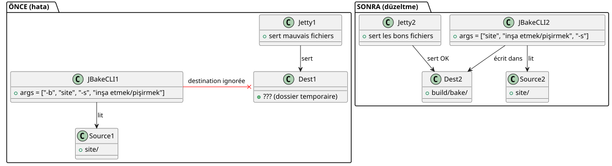

publishSite` mükemmelken `serve` neden çirkin bir site görüntülüyordu
Yayınlandı: 22 April 2026
Yerel siteniz hiçbir şey gibi görünen, ama bir kez çevrimiçi olarak dağıtıldıktan sonra her şey harika olduğu anı biliyor musunuz? Bu, Gradle JBake eklentimle yaşadığım şeydi. Görev`serve`kare düğmeler gösteriyordu, siyah arka plan üzerinde koyu metin, ve bir CSS garip şekilde eksildi. Ancak`publishSite`aynı siteyi üretti, onu, mükemmel. Suçlu ne CSS, ne tarayıcı, ne de önbellekti. Bu, Kotlin kodu bir satırıydı — ve komut satırı argümanlarıyla ilgili bir kötü alışkanlık.
- içindekiler
-
[]
Sahne: dört ekran görüntüsü, iki render
Bir sistem çökmesinden sonraydi. Yerel renderi karşılaştırmak için dört ekran görüntüsü almıştım (./gradlew serve`üzerinde`localhost:8820) çevrimiçi rendering ile (`publishSite`GitHub Pages'). Sayfa başına iki ekran görüntüsü: üst ve alt.
Yerel rendering
Sayfa üstü— Project ve Template düğmeleriküçük, dikdörtgen, standart renkler (mavi ve yeşil). Start Writing kartı birdüz siyah arka plan, çerçevesiz.

alt sayfa— Alt başlık *"Derniers articles et ressources"*neredeyse okunamayan, siyah arka plan üzerinde çok koyu. Blog görüntüleri altındaki tarihler ('17 October 2013', vb.) dir.olmayan.

Çevrimiçi render
Sayfanın üstü— Aynı düğmelerbüyük, koyun, şölen neon yeşil, büyük harfli metin. Kartta birgölgeli yuvarlak beyaz çerçeve.

Sayfa altıAlt başlıkokunaklı. Tarihlergörünür. Maddelerin kartları varyuvarlatılmış köşelerve başlıklarkalın.

İlk refleks: tema. Kullanıyorum bir dinamik tema sistemi (açık, karanlık, yüksek kontrast) tabanlı`localStorage`. Belki yerel mağaza bir yüksek kontrast teması tetikliyordu? Hayır. Zaten yazmıştım.https://cheroliv.com/blog/2025/0098_preloading_css_variable_post.html[tema ön yüklemeyle ilgili tam bir makale], Nasıl çalıştığını biliyorum. Ve hatta high-contrast modunda bile, CSS yapısı (oval butonlar, gölgeler) olması gerekiyordu. O orada değildi.
İkinci refleks: tarayıcı önbelleği. Hayır, temiz profillerle test yapmıştım. Fark devam ediyordu.
Üçüncü refleks :`serve`aynı dosyaları sunmuyendo`publishSite`.
Teşhis: serve doğru klasöre işaret etmiyordu.
Gradle eklentim`bakery`iki ana görevi vardır :
-
bake: statik siteyi içinde oluşturur`build/bake/` -
serve: yerel bir web sunucusu başlatır -
`publishSite`itir`build/bake/`GitHub Pages’e
Farklılık sadece … den gelebilirdi`serve`. Si publishSite`doğru içeriği yayınlayıyordu, demek ki`build/bake/`iyi idi. Eğer`serve`Başka bir şey gösteriyordu, aslında işe yaramıyordu`build/bake/.
Koda bakalım. İçinde`SiteManager.kt`, görev`serve`şöyle tanımlanmıştır:
tasks.register("serve", JavaExec::class.java) { task ->
task.apply {
mainClass.set("org.jbake.launcher.Main")
classpath = jbakeRuntime
environment("GEM_PATH", jbakeRuntime.asPath)
jvmArgs(/* ... */)
args = listOf(
"-b", file(site.bake.srcPath).absolutePath,
"-s", layout.buildDirectory.get()
.asFile.resolve(site.bake.destDirPath)
.absolutePath
)
}
}org.jbake.launcher.Main`JBake 2.7.0 CLI’nin giriş noktasıdır. Fikir : geçmek-b`kaynak klasörü için ve`-s`hedef klasör için, sonra sunucu modunu başlat. Ancak…
Kök neden: JBake CLI şöyle çalışmıyor
JBake 2.7.0 bekliyorpozisyonel argümanlarkaynak ve hedef için, ardından isteğe bağlı bayraklar. İmza şu şekildedir:
jbake <source> <destination> [options]Ancak kodumda, yazıyordum :
args = listOf("-b", "/path/to/site", "-s", "/path/to/build/bake")JBake bunu şöyle yorumluyordu:
-
-b→ "bake" bayrağını (bool) ayrıştır, tüketilmiş -
/path/to/site→ birinci pozisyonel argüman haline gelir (kaynak) -
-s→ parse flag "serve" (boolean), başlatılmış serverhemen -
/path/to/build/bake→ yitik bir argüman haline gelir, görmezden gelinir veya yanlış yorumlanır
Sonuç : JBake alıyordu`/path/to/site`kaynak olarak,varış dikkate almıyordusağlanan (build/bake), ve kullandı varsayılan repertuarını (sık sık`./output`veya geçici bir kopyası). Dosya`css/styles.css`build, dolayısıyla ezildi veya yok sayıldı, ve bu, varsayılan eski bir CSS (özel değişkenler olmadan, yuvarlak köşeler olmadan, gölgeler olmadan) sunuluyordu.
Karşılaştırıldığında,bake et publishSite`kullanırlarresmi Gradle JBake eklentisi(`jbake-gradle-plugin) düzgün yazan içinde`build/bake/`Gradle API üzeründen. CLI üzeründen geçmiyorlar.
Çözüm: konumlu argümanlar, bayraklar değil
Düzeltme triviadir — bir kez biliyorsan. Kaynak ve hedefi pozisyonel argüman olarak geçmek yeterli, sonra`-s`son olarak :
args = listOf(
file(site.bake.srcPath).absolutePath,
layout.buildDirectory.get()
.asFile.resolve(site.bake.destDirPath)
.absolutePath,
"-s"
)Bütün bu. Üç satır değişti, hata çözüldü.
Eklenti yerel olarak yayınlandıktan sonra (publishToMavenLocal), un `./gradlew serve`JBake’i doğru sözdizimiyle başlat:
jbake /home/user/project/site /home/user/project/build/bake -sVe bu kez, JBake’a entegre edilmiş Jetty sunucusu, içeriği iyi bir şekilde sunuyor`build/bake/`— çevrimiçi olarak yayınlananla aynı.

curl ile hızlı kontrol
Sunucunun doğru içeriği sunduğundan emin olmak için, basit bir`curl`onaylar ki`index.html`içeriyor`data-bs-theme="light"`ve`build/bake/css/styles.css`tam olarak 31 402 bayt ağırlığındadır — üretilen dosya ile aynı`bake`.
$ ./gradlew serve
# Dans un autre terminal :
$ curl -s http://localhost:8820/ | grep data-bs-theme
<html ... data-bs-theme="light" ...>
$ curl -I http://localhost:8820/css/styles.css
HTTP/1.1 200 OK
Content-Length: 31402
Content-Type: text/cssYerel renderleme artıkpiksel-aynıdağıtılmış render için.
Bu hata neden kötü niyetliydi?
Neden yakalaması zor olduğunu görüyor musun?
-
Açık hata yok: JBake çökmiyordu. O 'işliyordu', sadece kötü bir klasörle.
-
Derleme çalışıyordu:`./gradlew bake`dosyaları içinde doğru bir şekilde oluşturuyordu`build/bake/`.
-
Dağıtım çalışıyordu:`publishSite`İyi içeriği çevrimiçi olarak itiyordu.
-
Sadece
servebozuktu: geliştirme görevi, sürekli kullanıdığımız tekrarlama görevi. -
alışkanlığı
-key value: bir geliştirici olarak, yılarca Unix CLI’siyle koşullandırılmıştır (-o output`,-i input) JBake CLI bir istisna — kaynak ve hedef pozisyoneldir.
Sonuç
Gradle’da JBake’i saralayan (veya başka bir CLI aracı) bir eklenti sürdürüyorsanız,Argümanların dokümanını okuyunbile onları tanıdığınızı sanıyor olsanızda. Bir örtük varsayım (-s = "set destination") görsel hata ayıklama için saatlerce zaman kaybetmenize neden olabilir.
Burada, düzeltme aslında değiştirmek idi:
args = listOf("-b", src, "-s", dest) // ❌ BUGen :
args = listOf(src, dest, "-s") // ✅ FIXÜç token taşındı, ve yerel sitem üretim sitesi kadar güzel oldu.
Ders: yerel ve prod arasında render farklılığı gözüküyor ve açık bir neden yoksa, önce pipeline'i şüphe edin — CSS değil, tarayıcı değil, ve özellikle de framework değil. Genellikle render’dan hemen önceki adım hile yapar.